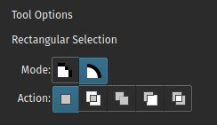

選取區域¶
選取區域用於選取圖稿的指定區域進行變更，依不同使用需求挑選使用不同的選取工具，它可以用於進行局部移動、變形或在特定區域內繪製而不影響其他區域。Krita的選取區域不限於畫布邊界內,還可以選擇邊界外的部份,當建立選取區域後所有工具只在範圍內執行作動。在區域內可以繪製或使用漸變快速著色及輪廓分明的陰影形狀。
建立選取區域¶
常見的選取區域工具位於工具箱底部。每個工具框選的方式略有不同,將游標移到工具的圖示上停留會有更詳細的描述說明。
|
選取矩形區域。 |
|
|
選取橢圓區域。 |
|
|
Click where you want each point of the Polygon to be. Double click to end your polygon and finalize your selection area. Use the Shift + Z shortcut to undo last point. |
|
freehand/Lasso tool is used for a rough selection by drawing the selection outline freehand on the canvas. |
||
|
相似顏色選取工具。 |
|
|
Contiguous or “Magic Wand” selects a field of color. Adjust the Fuzziness to allow more changes in the field of color, by default limited to the current layer. |
|
|
Path select an area based on a vector path, click to get sharp corners or drag to get flowing lines and close the path with the Enter key or connecting back to the first point. |
|
|
Magnetic selection makes a free hand selection where the selection snaps to sharp contrasts in the image. |


備註
You can also use the transform tools on your selection, a great way to try different proportions on parts of your image.
編輯選取區域¶
The tool options for each selection tool gives you the ability to modify your selection.
操作 |
切換鍵 |
快捷鍵 |
描述 |
取代 |
Ctrl |
R |
替換當前選取區域。 |
交集 |
Shift + Alt |
-- |
選取兩個選取區域重疊的部份。 |
潻加 |
Shift |
A |
添加新的選取區域到當前選取區域範圍。 |
減去 |
Alt |
S |
從當前選取區域減去選取區域範圍。 |
對稱差 |
-- |
-- |
Make a selection where both the new and current do not overlap. |
You can change this in Tools Settings.
If you hover over a selection with a selection tool and no selection is activated, you can move it. To quickly go into transform mode,  and select Edit Selection.
and select Edit Selection.
取消選取¶
If you want to delete the entire selection, the easiest way is to deselect everything. . Shortcut Ctrl + Shift + A.
When you have one of the selection tool active, and the mode of selection is in intersect, replace or symmetric difference then you can also deselect by just  anywhere on the canvas.
anywhere on the canvas.
顯示模式¶
In the bottom left-hand corner of the status bar there is a button to toggle how the selection is displayed. The two display modes are the following: (Marching) Ants and Mask. The red color with Mask can be changed in the preferences. You can edit the color under . If there is no selection, this button will not do anything.

Ants display mode (default) is best if you want to see the areas that are not selected.

Mask display mode is good if you are interested in seeing the various transparency levels for your selection. For example, when you have a selection with very soft edges due using feathering.
4.2 版更變: Mask mode is activated as well when a selection mask is the active layer so you can see the different selection levels.
全域選取區域遮罩（繪畫出選取區域）¶
The global Selection Mask is your selection that appears on the layers docker. By default, this is hidden, so you will need to make it visible via .

Once the global Selection Mask is shown, you will need to create a selection. The benefit of using this is that you can paint your selection using any of the normal painting tools, including the transform and move. The information is saved as grayscale.
You can enter the global selection mask mode quickly from the selection tools by doing and select Edit Selection.
自圖層透明度產生選取區域¶
You can create a selection based on a layer's transparency by right-clicking on the layer in the layer docker and selecting Select Opaque from the context menu.
4.2 版新加入: You can also do this for adding, subtracting and intersecting by going to , where you can find specific actions for each.
If you want to quickly select parts of layers, you can hold the Ctrl + shortcut on the layer thumbnail. To add a selection do Ctrl + Shift + , to remove Ctrl + Alt + and to intersect Ctrl + Shift + Alt + . This works with any mask that has pixel or vector data (so everything but transform masks).
像素及向量選取區域類型¶
Vector selections allow you to modify your selection with vector anchor tools. Pixel selections allow you to modify selections with pixel information. They both have their benefits and disadvantages. You can convert one type of selection to another.
When creating a selection, you can select what type of selection you want from the Mode in the selection tool options: Pixel or Vector. By default this will be Vector.
Vector selections can be modified as any other vector shape with the Shape Selection Tool, if you try to paint on a vector selection mask it will be converted into a pixel selection. You can also convert vector shapes to selection. In turn, vector selections can be made from vector shapes, and vector shapes can be converted to vector selections using the options in the Selection menu. Krita will add a new vector layer for this shape.
One of the most common reasons to use vector selections is that they give you the ability to move and transform a selection without the kind of resize artifacts you get with a pixel selection. You can also use the Shape Edit Tool to change the anchor points in the selection, allowing you to precisely adjust bezier curves or add corners to rectangular selections.
If you started with a pixel selection, you can still convert it to a vector selection to get these benefits. Go to .
備註
If you have multiple levels of transparency when you convert a selection to vector, you will lose the semi-transparent values.
選取區域作業的通用快捷鍵¶
Copy -- Ctrl + C or Ctrl + Ins
Paste -- Ctrl + V or Shift + Ins
Cut -- Ctrl + X, Shift + Del
Copy From All Layers -- Ctrl + Shift + C
Copy Selection to New Layer -- Ctrl + Alt + J
Cut Selection to New Layer -- Ctrl + Shift + J
Display or hide selection with Ctrl + H
Select Opaque -- Ctrl +
on layer thumbnail.Select Opaque (Add) -- Ctrl + Shift +
on layer thumbnail.Select Opaque (Subtract) -- Ctrl + Alt +
on layer thumbnail.Select Opaque (Intersect) -- Ctrl + Shift + Alt +
on layer thumbnail.